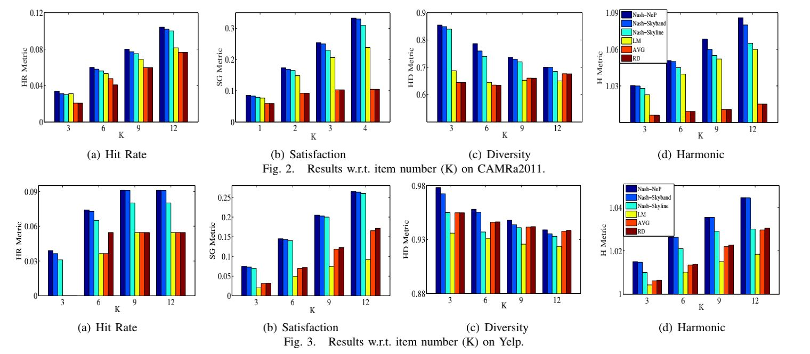
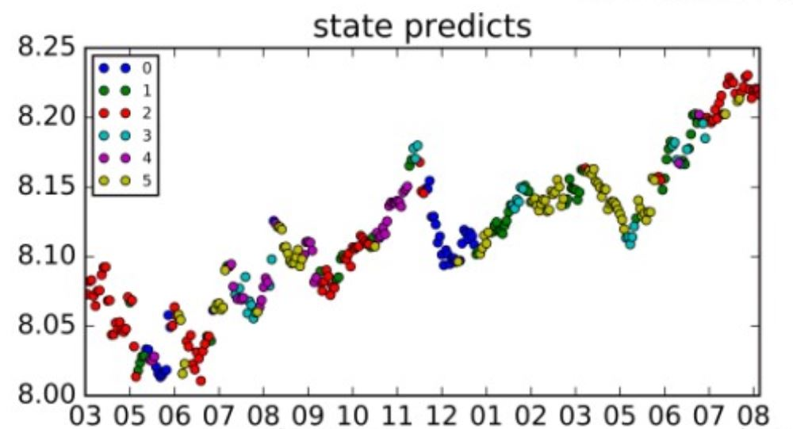
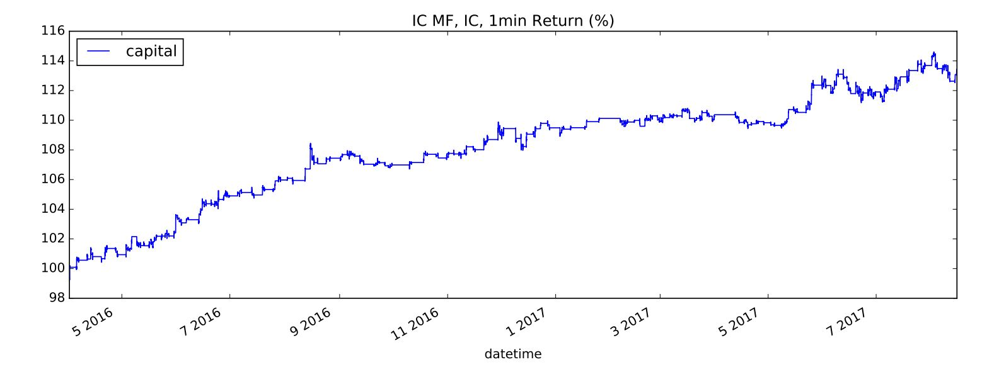

Any suggestions welcome! Please send it to kongry.16@sem.tsinghua.edu.cn .
Recommendation systems
Crowdsourcing systems
Prediction of Markets and Economies, Markov Chain Monte Carlo (MCMC)
Risk Management
09/2014-05/2016, Department of Data Mining, National Engineering Laboratory for Speech and Language Information Processing, supervised by Prof. Qi Liu.
1. Design recommendation systems for group users.
1）Group-oriented services such as group recommendations aim to provide services for a group of users. For these applications, how to aggregate the preferences of different group members is the toughest yet most important problem.
2）In traditional preference aggregation methods, such as prefernce aggregation and score aggregation, the interactions and fairness of group members are still largely ignored. Therefore, these aggregation approaches, which are unable to figure out the optimal selections that can be accepted by all members in a group, may lead to unsatisfying services.
3)Inspired by game theory, we propose to explore the idea of Nash equilibrium to simulate the selections of members in a group by a game process. Game process could capture the group members’ interactions and Nash equilibrium solution considers the fairness as much as possible.
4)Along this line, we first calculate the preferences (group-dependent optimal selections) of each individual member in a given group scene, i.e., an equilibrium solution of this group, with the help of two pruning approaches. Then, to get the aggregated unitary preference of each group from all group members, we design a matrix factorizationbased method which aggregates the preferences in latent space and estimates the final group preference in rating space. After obtaining the group preference, group-oriented services (e.g., group recommendation) can be directly provided.

5) We examine our method on Yelp dataset who has 22333 ratings. The results show that the nash method has an outstanding performance on 4 major metrics over other methods.

Hongke Zhao, Qi Liu, Yong Ge, Ruoyan Kong, Enhong Chen, Group Preference Aggregation: A Nash Equilibrium Approach, In Proceedings of the 16th IEEE International Conference on Data Mining (ICDM'16), Barcelona, Spain, 2016, 679-688
My major work in this program includes 1) coming up with the initial idea 2) the building of the model of initial system 3) coding work of the system and the experiment. I got Outstanding Students Research of USTC in 2015.
2. Model of Incentives in Repeated Crowdsourcing System
Repeated crowdsourcing system refers to the crowdsourcing systems with tasks which need to be conducted several times. A problem needs to be solved in repeated crowdsourcing system is how to set appropriate incentives for task receivers to maximize the profits of task givers and task receivers.
I build the discrete model of repeated crowdsourcing system and calculate the profits of task givers and task receivers in each round under different ways of pay, different productive functions and different incentives. Then the following conclusions can be drawn:
1. In discrete model of repeated crowdsourcing system, if incentives are limited, then the cumulative profits of task givers and task receivers are limited.
2. In low-pay discrete model of crowdsourcing system, the cumulative profits of task givers are increasing with tthe number of turns.
3. The monotonicity of the cumulative profits of task receivers are related to the relative strength of different incentives and the initial profits of task receivers.
From this work, the mediation platforms can design a pricipal scheme to incentivize the participation of both task givers and task receivers. (future work)
This is my undergraduate thesis and I got A.
12/2016-08/2017 Department of Investment Management, Derivatives-China, supervised by Mr. You Zhang (Chairman) and Dr. Ling Long.
1. Built market timing strategy based on Hidden Markov Model with improvement via Adaboost to apply to different market environments.
1) In order to predict the market to make profit, we use hidden markov model (HMM) to divide the market into N different status.
2) The Baum-Welch algorithm that is currently used to estimate the HMM only converges to the local solution of HMM and can't be applied in the real trading because its result will change every time. We design a parallel-serial estimation algorithm to solve this problem and got a stable solution in industrilization. This is a creative work which has not been done before.

Fig 1. The status of 399905.SZ predicted by HMM (which gives a green warning before the great market crash in 2015)
We can find out that HMM has a good performance in describing the market.
3) The estimation of HMM is unsupervised and may not towards the direction which we need to make profits from. Also, the estimation process is largely influenced by the big trend of the market, for example, the big trend of the market from 2006 to 2015 is increasing, then HMM will tend to give an increasing status instead of the local situation of the market. We need to build market timing strategy which can be applied to different market environments.

Because Baum-Welch algorithm and HMM contains a concept of dependent time series, we can't solve this problem by simply enlarge the weights of negative samples.
We use an adaboost-subsection estimation method to solve this problem. To our knowledge, this is a pioneer work .

Our algorithm has an outstanding performance in predicting the market.

It can also bring consistent return.


2. Application of Markov Chain Monte Carlo (MCMC) and HMM in GDP prediction.
1) If we want to apply HMM in GDP prediction, we would find out that the large value of features (E.g. the overall gdp of last year) will keep us from good estimation of HMM, especially the means matrix and covariance matrix in HMM. We need to find a method to avoid this drawback of HMM estimation algorithm.
2) We use Markov Chain Monte Carlo (MCMC), which we can input our prior information about the distribution of parameters in. MCMC has a markov process which will converge to the best estimation based on the posteriori distribution and the priori distribution of parameters.
3) We can see that MCMC has lower error rate in the estimation of parameters who have high dimensions and large value.

Thanks to the beneficial suggestions from Prof. Thomas J. Sargent.
09/2017- (ongoing) School of Economics and Management, Tsinghua University, supervised by Prof. Michael R. Powers.
1.Risk Finance Paradigm with Copulas
1) When facing with risks, companies can choose to pool, hedge or avoid them. However, the traditional risk finance paradigm can't give a quantitative method to describe the condition of the application of these strategies.
2) In our prior work (Risk Finance for Catastrophe Losses with Pareto-Calibrated Levy-Stable Severities, Michael R. Powers), we used stable distribution to model this paradigm. In this paradigm, we assume that losses are independent, which is inconsistent with our real experience.
If we assume losses are correlated, the paradigm would be different. The reason for taking correlation into consideration is that correlation between losses will affect people’s decision about whether to hedge or pool the loss portfolio L. For example, a group of marine traders want to limit their ship sinking risks. If their routes are different, their ship sinking risks are uncorrelated and they can divide their merchandise into portions and distribute across all ships (pooling), then no trader will be devastated by sinking of one ship. However if their routes are the same, their ship sinking risks are correlated (their ships may be attacked by hurricane or tidal wave together), then pooling will be useless in this case because they will be devastated by sinking of ship altogether and they should choose to hedge this portfolio like to buy insurance from an insurer (who can afford this because he can pool the risks from different marine trader groups).
3) Heavy-tailed case: As p increases, the firm will be more sensitive to risks, and the lower boundary will decreases more rapidly as the expected frequency increases. It can be observed that when p < 2, a firm will still choose pooling when the dependence between risks is small as the expected frequency increases. However, when p > 2, as the expected frequency is large enough, the firm will always choose hedging no matter the dependence is small or not.

4) Light-tailed case:
When the expected frequency become a little larger, the firm will be able to accept higher dependence(TypeII). It may be attributed to that a little larger frequency offers more choice for the firm to distribute the risks.
When the expected frequency achieves some point, the firm can only accept lower dependence as the expected frequency increases(TypeI). It may be attributed to that higher frequency will increase a firms’ overall risks to a large extent. And an interesting inverse lower part appears(TypeIII). In this part, the firm will be exposed to high frequency and low dependence risks, and it will choose hedging to diminish the risks brought by the high frequency.
As p increases, the firm will be more sensitive to risks, and the lower part of the T ypeI boundary will decreases more rapidly as the expected frequency increases. When p > 4/3, the hedging districts in the right-upper corner and in the right-lower corner will merge when the expected frequency is large enough, which means that the firm will always choose hedging when the expected frequency is large enough. When p < 4/3, there will always be a room left for pooling no matter how larger the expected frequency will be.
 
|